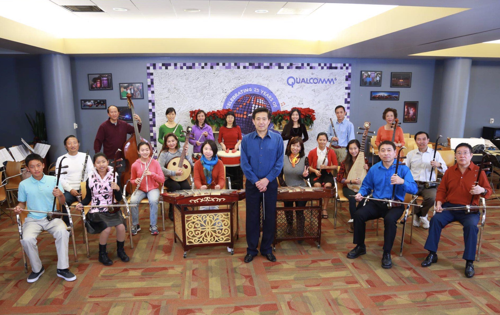

North America Chinese Writers Association Los Angeles
仗著小時候學過拉小提琴的一些基礎，我斗胆加入了博華民樂團，開始改拉二胡。
加入樂團參加排練，首先是樂在其中。以往觀看各種演出，我總會盡可能的去劇場欣賞，感受身臨現場的氣氛。如今置身於樂隊之中，弦樂聲、管樂聲此起彼伏；琴聲，笛聲，箏聲、阮聲、鼓聲、喇叭聲不時在我的前後左右切入，以絕對立體的音響效果在耳邊環繞。期間我還能配合著擺弄幾下二胡，發出點自己的聲音與大家互動，就象聽曲聽到動情處，也附和著哼唱幾句一樣，那意境是台下的觀眾難以領略的另一種享受。
我所參加的博華樂團是一個有著高、中、低三個聲部，由管樂、弦樂、彈撥樂、打擊樂組成的中型民族樂團。團友都是來自五湖四海，為了一個共同的業餘愛好走到一起來的。十多年前，幾個定居美國的華人科技精英，出於對民族音樂的興趣，每周聚會在一起，合奏娛樂。隨後幾年里，一個個有著專業水準的導演、指揮、編劇以及弦樂、管樂的獨奏演員，相繼聚集在博華的旗下，使樂團具備了演奏民族管弦樂的架構和實力。他們堅持每周排練，整體水平明顯提升，逐步由參於演出插節目，發展為自己獨場演出，被人們譽為＂業餘團隊，專業水準＂。
進入博華民樂團後我發現，團里許多謙和禮讓，不張不揚的＂同事＂，都是多面高手。他們大都具有高等學歷，在單位是挑大梁的精英。在業餘愛好上也毫不遜色。好多人上學時就身手不凡，在省級以上的樂器演奏大賽中取得過好名次。真不知道他們在讀書比拼成績時，是怎樣做到學習和「玩兒」兩不誤的。
博華樂團部分團員合影。前排正中站立者是樂團指揮劉連祥。前排右一是作者
與這麼一群成功者為伍，欣喜之余又感到了自己要追的差距之大。感嘆人與人就沒法兒比，能行的哪樣兒都行。沒出息的哪一樣兒都提不起來。同樣是在一個大環境下成長，人家怎麼就能各方面都這麼優秀？
如果說我是為了宏揚東方文化，促進中美交流而貢獻力量，那是拔高自己。其實我內心只是想有個娛樂的地方能打發時光。
遙想當年我插隊時，買了一把小提琴從「東方紅「、「北風吹「學起。那時，我是憑興趣找幾本入門書，邊琢磨邊練習。即無人指導，也沒人考評，不拉沒人過問，拉不好卻有人嫌煩。能隨著廣播里播放的歌曲，拉上一段就很滿足。時間久了，我逐漸把興趣變成了愛好，就象多交了一位知己，高興時拉上一陣，就象是與老朋友聊天，傾訴了一番，心情就會舒暢，就會覺得充實。
其實，我並沒有音樂天賦，遠達不到人琴合一，把情感和琴聲融為一體的程度，也沒有從基本功練起的耐心。在學琴中我要麼急於求成；要麼淺嘗輒止；要麼拉上幾天放幾個月；要麼不管音調准不准，隨心所欲的亂拉一陣發瀉鬱悶。把拉琴變成釋放自己心聲的音箱，借以排泄孤獨或抒發興致。
曾聽有人說，愛好音樂是閒情雅興，可以修身養性陶冶性情。可我沈迷了幾年，覺的我還是我，性情照舊，並沒感覺到能讓我高雅的功效。尤其是我火氣上來時，該暴發的脾氣照樣克制不住。
而立之後，為了生活打拼，就冷落了這不能幫助生錢，不能幫助晉級的無用＂特長＂，足足有十多年沒再理睬過它。
在美國生活後，大量閒暇時光，又喚起了我對小提琴的鐘情。更重要的是聽人說，經常擺弄樂器，活動手指可以防止患老年痴呆。就憑這一療效，就衝著以後能不給妻子、兒子添麻煩，我也決心把經常拉琴作為生活中的重中之重。
現在，擺弄樂器又成了我的情感寄託，我又找回了青少年時的感覺。